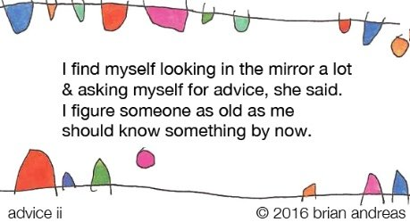

I woke up this morning feeling bad.
As in sad, anxious, foreboding dread.
Hello old friends.
There used to be a time that I woke every morning with that same heavy feeling of misery and doom. Much of my life, really.
Happily it’s been ages, years, since I’ve woken to these kinds of delights.
Surprise! They’re baaaack.
Of course I’m not the only one who experiences some rough feelings, in the morning or otherwise.
Having worked with so many hurting folks, in the interest of help I thought I’d share how this all worked out with me today, what worked, what didn’t.
Reminder one: Feeling states come and go.
I felt fine yesterday. And the day before. Early today? Not so much. Later today? Fine again. Tomorrow? Who knows.
Feelings blowing in and out, coming and going. Like leaves on a windy day.
Reminder two: Want reasons and explanations? Sure, ok. Just prepare to suffer.
This morning, there seemed to be no reason for this reappearance of misery out of the blue.
It was just suddenly there. And dammit, mind wanted a reason.
Surely there was a cause, a thought, something I could pin it on. There had to be an explanation.
Bad feelings don’t just happen for no reason.
Do they?
So the thought-machine started right in. No warm-up, no easing in, no starting slow. Just BAM.
An immediate running through of all possible causes.
You know, the You Suck Life Sucks Litany List.
Stupid guilty loser unloved unlovable past shames childhood trauma failure too old too lazy too fearful too wrinkled trying too hard mean ungraceful ungrateful this friend that ex uncreative unoriginal nothing to offer unnecessary hard life bad breaks nasty bad too moody too reactive faking faker unkind smarts bad no future no relief no hope big mouth different weird no value not enough not enough not enough.
Situation A Situation B Situation C next time last time never always
will be could be going to shouldn’t.
Well.
That felt awful.
And all that crap came spilling up effortlessly fast, didn’t it?
What the hell.
Reminder three: Thought has noooo trouble coming up with lots of stuff wrong… with me, with you, with the world, with life, with death.
Left to the thought loop, all is miserable hopeless problem in need of solving right now.
Oh mind was happily hating on me and trying to solve the awfulness of it all.
But … maybe that was all a trick.
Maybe the feeling was not about some “cause.”
Huh. Could it be a “reason” wasn’t even necessary?
I mean, maybe that feeling was just an innocuous occurrence. A passing through.
Like… buses. Wait long enough, this bus will leave and another will come along.
And… maybe thinking and feeling reactions were just a habitual this-is-what-we-do-now- it-means-nothing happening.
Is it possible?
What if thoughts and feelings were just habits, happening on autopilot?
Ding ding ding. 6 o’clock Monday. Time for heaviness.
Maybe all that stuff circulating in the personal growth sort-of-spiritual community about focusing on feelings, listening to them, sitting with them, feeeeeling them, has been making something habitual and meaningless to be much more important than it actually is.
Maybe rough feelings don’t actually need a whole lot of attention or focus or reason or meaning assigned.
Yes I realize that’s true heresy to some people reading this.
But sometimes heresy enables a way outside of boxes.
Which is how once again this morning I wandered into potentially spiritually incorrect territory.
Such as…
If this morning’s heaviness was just habit, then what had a problem with it?
What needed it to change?
What labeled it “suffering?”
Whatever it was, was it Me? Not “Judy”, but…
I felt into whatever it is that I really am.
(If you are playing along at home, be careful to not get caught up in letting mind define that just now. We could name it, but for right now it doesn't matter what "what I really am" is.)
And then I talked to it.
Yeah. I told you. Sue me.
I asked whatever-it-is-that-I-really-am if Judy was ok.
And then I listened.
And heard a yes.
I didn’t care where that answer came from.
Yes I have explanations and maybe if you write me I’ll share them, but again, it didn’t matter. I didn’t want to feed mind by getting diverted that way.
I hope you won’t either, because that's a trick; mind has no intention of actually helping figure this out.
I asked if whatever-it-is-that-I-really-am had a problem with Judy feeling some heaviness like what showed up this morning.
Nope.
Did whatever-it-is-that-I-really-am need that feeling gone?
Nah. What for?
And I knew that the peace I experienced at that point, as Judy connected to whatever-it-is-that-I-really-am, was my indication of truth.
I was good with that.
The morning-heaviness bus had pulled out and left.
The peace bus had pulled in.
Next.
For those of you hurting today, I wish you the same connection with what you really are.
And peace.
Feeling Bad
